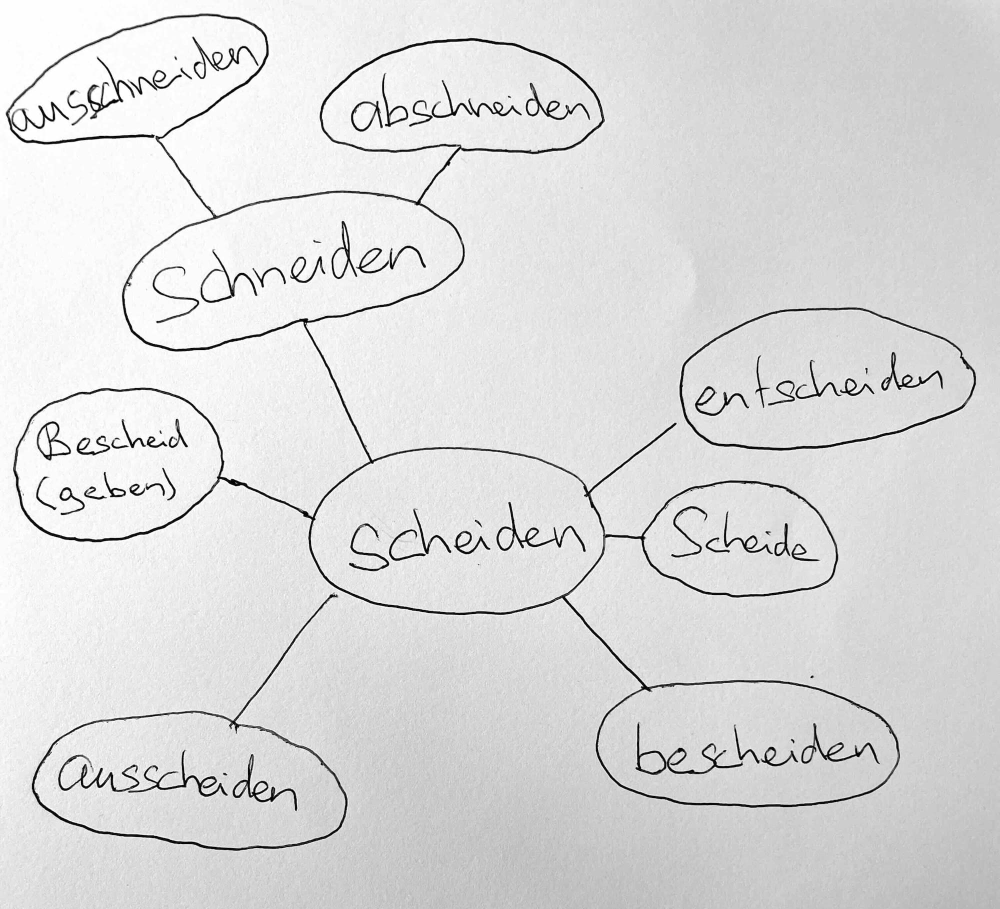

Idios Kosmos bedeutet private Welt. Diese Website stellt den Idios Kosmos dar und ist gleichzeitig ein Versuch, aus ihm auszubrechen.
Früher standen hier ausführliche Informationen zum Idios Kosmos. Ich habe diese Informationen von der Anfangsseite entfernt, da sie meine Leser schnell langweilten und abspringen liessen. Sie interessierten sich nicht für (Pseudo-)Intellektuelles Gerede. Ich verspreche, dass sich auf dieser Webseite Empörendes, Schreckliches und Sexuelles finden lässt. Man muss nur lange genug suchen.
Das Wort scheiden ist eng verwandt mit dem Idios Kosmos (inbesondere mit dem Versuch aus ihm auszubrechen). Das mag (jetzt noch) schwer ersichtlich sein, aber das Wort nimmt Einiges vorweg:

Ich schäme mich ganz besonders das Wort Scheide aufgeschrieben zu haben. Ich habe lange hin und her überlegt es aufzuschreiben, aber es wegzulassen, wäre unehrlich gewesen.
Auch fürchte ich mich davor, dass man mich nach diesen aufgeschriebenen Worten unsympathisch findet. Insbesondere Worte wie ausscheiden oder abschneiden könnten befremdlich wirken.